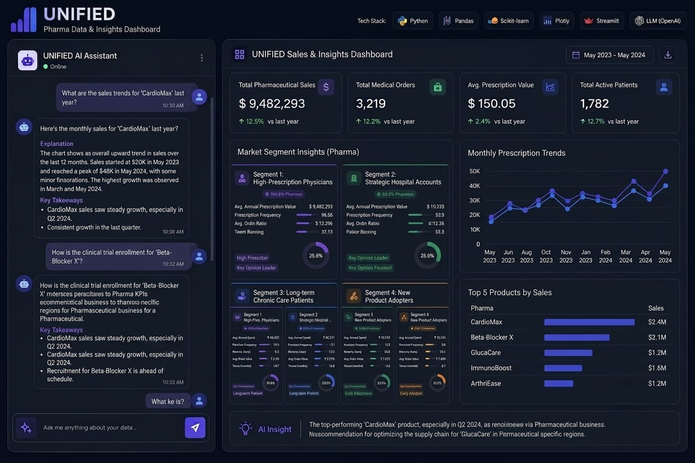
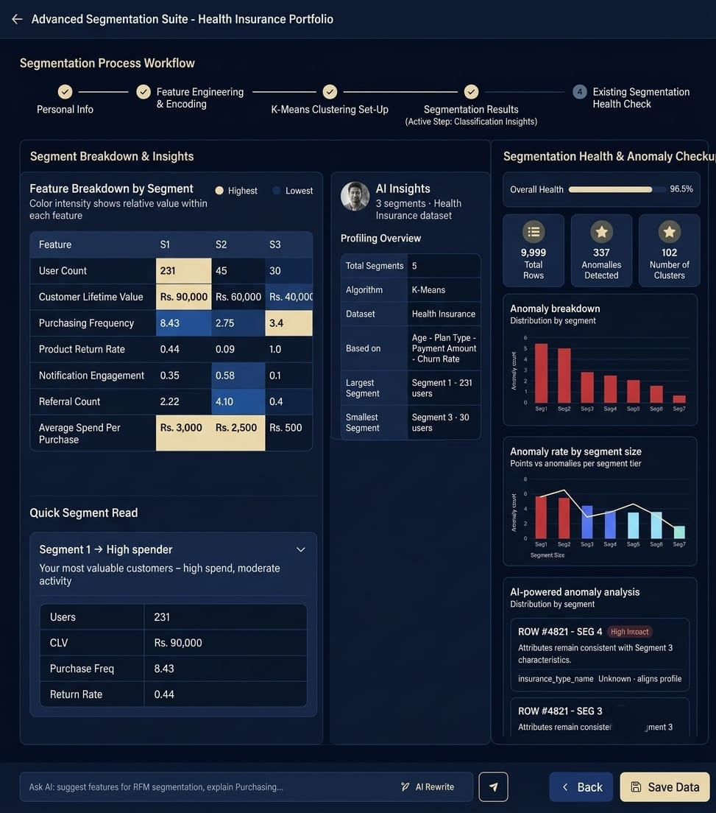

I build SQL-backed segmentation and forecasting pipelines that turn raw healthcare-professional data into engagement decisions — 1+ year doing this in production at Involead.
I’m Anushraya Das, an Associate Data Scientist at Involead with over a year of experience working on AI-driven analytics and machine learning solutions. I completed my studies at ITER, where I built a strong foundation in data science, statistics, and programming.
At Involead, I have been working on Unified, an enterprise analytics platform focused on segmentation, classification, forecasting, and AI-assisted analytics workflows. My responsibilities included dataset research and preparation, SQL-based data analysis, feature engineering, clustering and classification pipelines, API development with FastAPI, and AI-powered insight generation.
One of my key contributions was the development of an AI-powered segmentation platform where users can upload datasets, receive automated data health analysis, get AI-recommended features and clustering methods, generate segment profiles, and interact with the results through an Ask AI conversational interface. I also contributed to the classification module used for anomaly detection, segment maintenance, and assigning new data points to existing segments.
My work combines SQL, Python, machine learning, FastAPI, and LLM-based analytics with a strong focus on building practical solutions that help business teams make faster and more informed decisions.
I’m now looking for my next Data Scientist / ML Engineer opportunity in Hyderabad, Bengaluru, Pune, or Bhubaneswar, where I can contribute to building scalable AI and data products that create measurable business impact.


Pharma commercial teams were engaging HCPs uniformly, with no reliable way to tell a high-value prescriber from a low-engagement one. Unified was built to close that gap — end to end, from raw data to a segmentation and forecasting system the business could act on.
Researched real-world HCP engagement data structures and generated a representative dataset covering prescribing behavior, specialty, region, and interaction history.
Resolved missing values, duplicate records, and inconsistent categorical fields; built SQL pipelines to join and structure the data into an analysis-ready format.
Derived behavioral features — prescribing frequency, engagement recency, channel mix, specialty-adjusted volume — used as inputs to segmentation.
Standardized features and applied K-Means clustering, selecting cluster count via elbow method and silhouette score, then validated with hierarchical clustering.
Assessed cluster quality with silhouette score and within-cluster variance, and validated forecasting outputs with MAPE / RMSE against holdout periods.
Layered forecasting models on top of segments to project engagement trends per group, and summarized patterns into plain-language insights.
Coursera · strengthens analytics storytelling and stakeholder communication — financial aid available.
Coursera (UC Davis) · deepens window functions and query optimization, directly relevant to daily work.
Pandas, Intro/Intermediate Machine Learning, Feature Engineering, Time Series — short, hands-on, resume-worthy.
Coursera · broad, recognizable credential that reinforces the ML and Python fundamentals on this page.
Adds a recognized BI credential to back up the dashboarding work in the SQL Analytics project.
Download my resume for the complete breakdown of my experience, skills, and project impact.
Download Resume (PDF)I'm actively looking for Data Scientist, ML Engineer, and Analytics Engineer roles in Hyderabad, Bengaluru, Pune, and Bhubaneswar. If my segmentation and forecasting work is relevant to your team, I'd welcome a conversation.